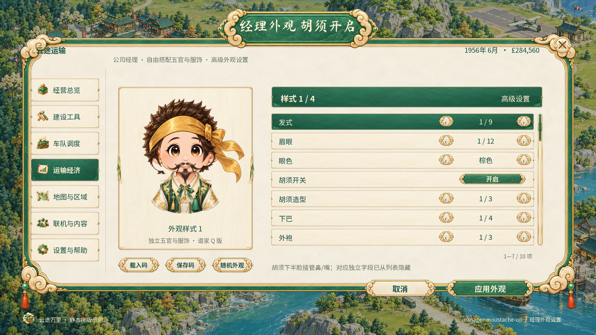
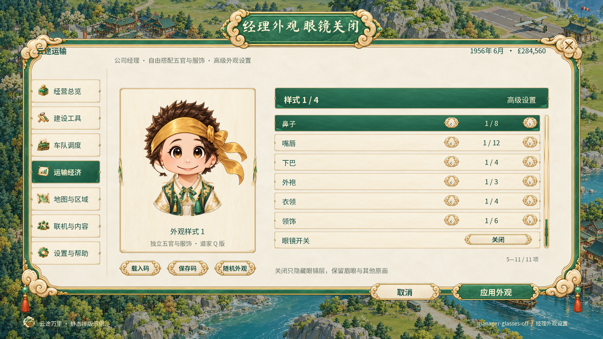
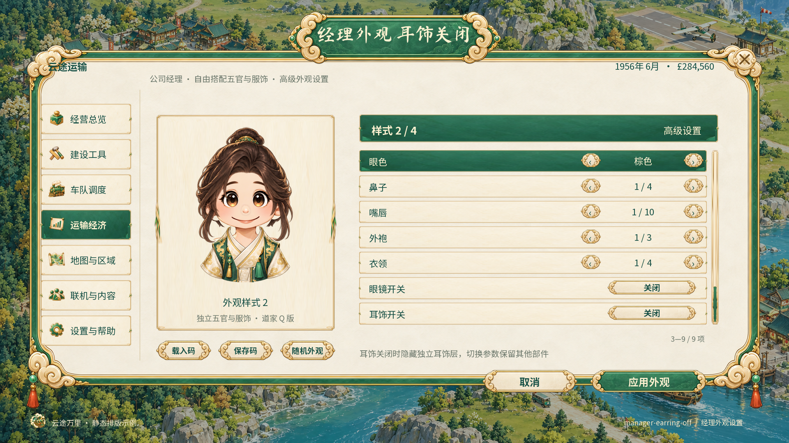
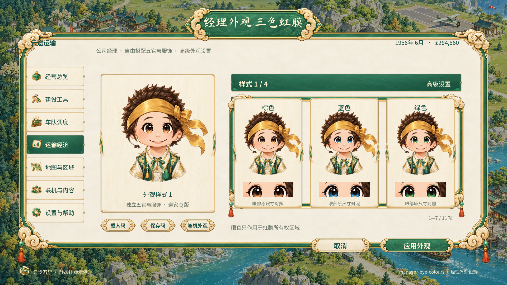
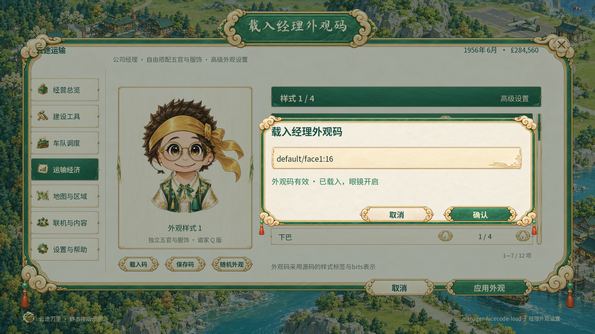
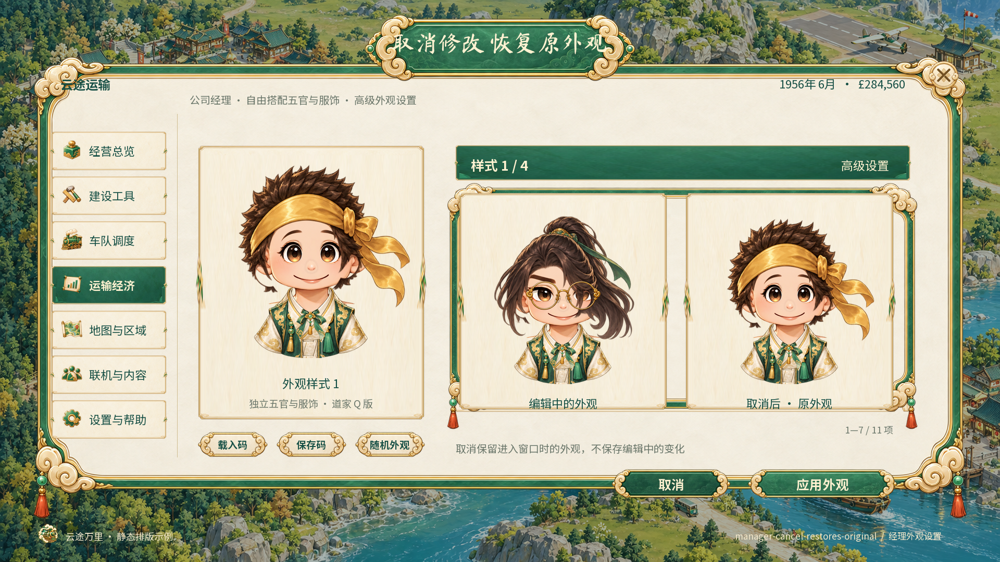

经理分层外观与高级状态
真实透明部件与静态设计图；235条源码值/状态关系。界面文字独立于正式画件，尚未Unity运行。
advanced — 独立选择部件；切换样式后只显示兼容字段advanced-scroll-bottom — 高级列表下半部；眼镜开关、衣领、外袍与领饰moustache-on — 胡须下半脸接管鼻/嘴；对应独立字段已从列表隐藏
glasses-off — 关闭只隐藏眼镜层，保留眉眼与其他原画
earring-off — 耳饰关闭时隐藏独立耳饰层，切换参数保留其他部件
eye-colours — Three actual eye palettes; image owner check proves outside-iris pixels unchanged
facecode-load — 外观码有效 · 已载入，眼镜开启
facecode-save — 外观码已保存 · 可在其他存档中载入facecode-invalid — 无法识别样式或数值超出范围；当前外观保持不变cancel-restores-original — Actual restored composition SHA matches initial original composition